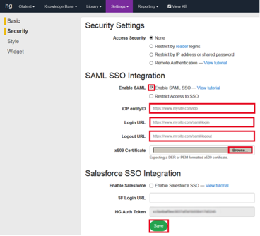
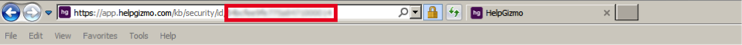
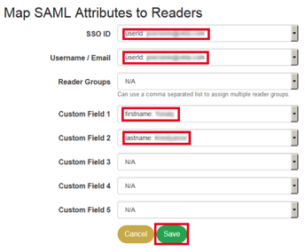

This setup might fail without parameter values that are customized for your organization. Please use the Okta Administrator Dashboard to add an application and view the values that are specific for your organization.
Log into HelpGizmo as an administrator.
Navigate to Settings > Security.
Select the Enable SAML checkbox.
Enter the following values (see screen capture at end of step for reference):
iDP EntityID. Paste the following into this field:Sign in to the Okta Admin app to generate this variable.
Login URL. Paste the following into this field: Sign in to the Okta Admin app to generate this variable.
Logout URL. Paste the following into this field: Sign in to the Okta Admin app to generate this variable.
Download the x.509 Certificate in .cert format, the click Browse and upload the downloaded certificate: Sign in to the Okta Admin app to generate this variable.
Select Save.
Copy your instance ID from the address bar in your browser:

In Okta, navigate to the General tab for the HelpGizmo app, then select Edit.
Select Entity ID: Reader Mapping.
Enter the ACS URL: https://app.helpgizmo.com/kb/map-saml/id/<yourID> where yourID is the value from step 6, above.
Select Save.
In HelpGizmo, select the Map Reader Fields link, then enter the following values (see screen shot at end of step for reference):
SSO ID: userid
Username/Email: userid
Custom Field 1: firstname
Custom Field 2: lastname

Select Save.
In Okta, navigate to the General tab for the HelpGizmo app, then select Edit.
Select the Entity ID: Knowledge Base.
Enter the ACS URL: https://<YourSubDomain>.helpgizmo.com/help/saml-login where YourSubDomain is your HelpGizmos subdomain.
Select Save.
Done!
Notes:
IdP-initiated flows, SP-initiated flows, and Just in Time (JIT) provisioning are supported.
For SP-initiated flows, go to the login page of your account (https://<YourSubDomain.HelpGizmo.com) and select the Login link.